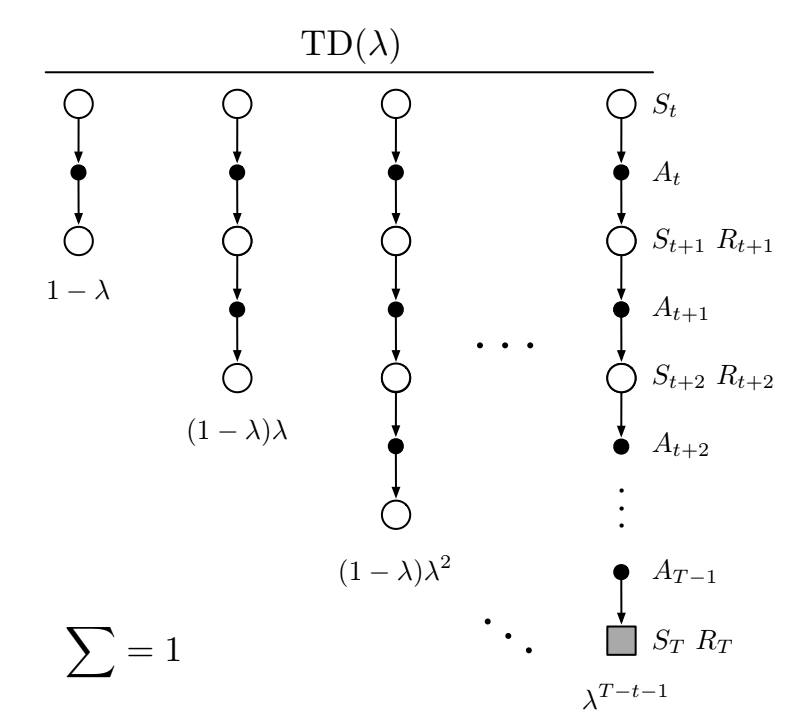
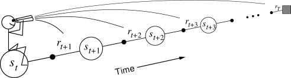
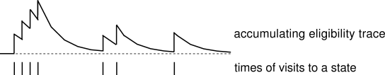

Temporal Difference learning
Temporal Difference algorithms
MC methods wait until the end of the episode to compute the obtained return, and update the estimates of all encountered states:
V(s_t) = V(s_t) + \alpha (R_t - V(s_t))
If the episode is very long, learning might be very slow. If the task is continuing, it is impossible. Considering that the return at time t is the immediate reward plus the return in the next step:
R_t = r_{t+1} + \gamma \, R_{t+1}
we could replace R_{t+1} by an estimate, which is the value of the next state V^\pi(s_{t+1}) = \mathbb{E}_\pi [R_{t+1} | s_{t+1}=s]:
R_t \approx r_{t+1} + \gamma \, V^\pi(s_{t+1})
Temporal-Difference (TD) methods simply replace the actual return by an estimation in the update rule:
V(s_t) = V(s_t) + \alpha \, (r_{t+1} + \gamma \, V(s_{t+1}) - V(s_t))
where r_{t+1} + \gamma\, V(s_{t+1}) is a sampled estimate of the return.

The quantity
\delta_t = r_{t+1} + \gamma \, V(s_{t+1}) - V(s_t)
is called equivalently the reward prediction error (RPE), the TD error or the advantage of the action a_t. It is the difference between the estimated return in state s_t V(s_t) and the actual return r_{t+1} + \gamma \, V(s_{t+1}), computed with an estimation.
If \delta_t > 0, it means that we received more reward r_{t+1} than expected, or that we arrived in a state s_{t+1} that is better than expected: we should increase the value of s_t as we underestimate it. If \delta_t < 0, we should decrease the value of s_t as we overestimate it.
The learning procedure in TD is then possible after each transition: the backup diagram is limited to only one state and its follower.
TD learns from experience in a fully incremental manner. It does not need to wait until the end of an episode. It is therefore possible to learn continuing tasks. TD converges to V^{\pi} if the step-size parameter \alpha is small enough.
The TD error is used to evaluate the policy:
V(s_t) = V(s_t) + \alpha \, (r_{t+1} + \gamma \, V(s_{t+1}) - V(s_t)) = V(s_t) + \alpha \, \delta_t
The estimates converge to:
V^\pi(s) = \mathbb{E}_\pi [r(s, a, s') + \gamma \, V^\pi(s')]
By using an estimate of the return R_t instead of directly the return as in MC, we increase the bias (estimates are always wrong, especially at the beginning of learning) but we reduce the variance: only r(s, a, s') is stochastic, not the value function V^\pi. We can therefore expect less optimal solutions, but we will also need less samples: better sample efficiency than MC but worse convergence (suboptimal).
Q-values can be estimated in the same way:
Q(s_t, a_t) = Q(s_t, a_t) + \alpha \, (r_{t+1} + \gamma \, Q(s_{t+1}, a_{t+1}) - Q(s_t, a_t))
Like for MC, the exploration/exploitation trade-off has to be managed: what is the next action a_{t+1}? There are therefore two classes of TD control algorithms: on-policy (SARSA) and off-policy (Q-learning).
SARSA: On-policy TD control
SARSA (state-action-reward-state-action) updates the value of a state-action pair by using the predicted value of the next state-action pair according to the current policy.

When arriving in s_{t+1} from (s_t, a_t), we already sample the next action:
a_{t+1} \sim \pi(s_{t+1}, a)
We can now update the value of (s_t, a_t):
Q(s_t, a_t) = Q(s_t, a_t) + \alpha \, (r_{t+1} + \gamma \, Q(s_{t+1}, a_{t+1}) - Q(s_t, a_t))
The next action a_{t+1} will have to be executed next: SARSA is on-policy. You cannot change your mind and execute another a_{t+1}. The learned policy must be \epsilon-soft (stochastic) to ensure exploration. SARSA converges to the optimal policy if \alpha is small enough and if \epsilon (or \tau) slowly decreases to 0.
Q-learning: Off-policy TD control
Q-learning directly approximates the optimal action-value function Q^* independently of the current policy, using the greedy action in the next state.
Q(s_t, a_t) = Q(s_t, a_t) + \alpha \, (r_{t+1} + \gamma \, \max_a Q(s_{t+1}, a) - Q(s_t, a_t))
The next action a_{t+1} can be generated by a behavior policy: Q-learning is off-policy, but the learned policy can be deterministic. The behavior policy can be an \epsilon-soft policy derived from Q or expert knowledge. The behavior policy only needs to visit all state-action pairs during learning to ensure optimality.
In off-policy Monte-Carlo, Q-values are estimated using the return of the rest of the episode on average:
Q^\pi(s, a) = \mathbb{E}_{\tau \sim \rho_b}[\rho_{0:T-1} \, R(\tau) | s_0 = s, a_0=a]
As the rest of the episode is generated by b, we need to correct the returns using the importance sampling weight. In Q-learning, Q-values are estimated using other estimates:
Q^\pi(s, a) = \mathbb{E}_{s_t \sim \rho_b, a_t \sim b}[ r_{t+1} + \gamma \, \max_a Q^\pi(s_{t+1}, a) | s_t = s, a_t=a]
As we only sample transitions using b and not episodes, there is no need to correct the returns: the returns use estimates Q^\pi, which depend on \pi and not b. The immediate reward r_{t+1} is stochastic, but is the same whether you sample a_t from \pi or from b.
Actor-critic methods
Actor-critic methods are TD methods that have a separate memory structure to explicitly represent the policy independent of the value function. The policy \pi is implemented by the actor, because it is used to select actions. The estimated values V(s) are implemented by the critic, because it criticizes the actions made by the actor. Learning is always on-policy: the critic must learn about and critique whatever policy is currently being followed by the actor.

The critic computes the TD error or 1-step advantage after each transition (s_t, a_t, r_{t+1}, s_{t+1}):
\delta_t = r_{t+1} + \gamma \, V(s_{t+1}) - V(s_t)
This scalar signal is the output of the critic and drives learning in both the actor and the critic. It tells us how good the action a_t was compared to our expectation V(s_t).
When the advantage \delta_t > 0, this means that the action lead to a better reward or a better state than what was expected by V(s_t), which is a good surprise, so the action should be reinforced (selected again) and the value of that state increased.
When \delta_t < 0, this means that the previous estimation of (s_t, a_t) was too high (bad surprise), so the action should be avoided in the future and the value of the state reduced.
The critic is updated using this scalar signal:
V(s_t) \leftarrow V(s_t) + \alpha \, \delta_t
The actor is updated according to this TD error signal. For example a softmax actor over preferences:
p(s_t, a_t) \leftarrow p(s_t, a_t) + \beta \, \delta_t
\pi(s, a) = \frac{\exp{p(s, a)}}{\sum_b \exp{p(s, b)}}
When \delta_t >0, the preference is increased, so the probability of selecting it again increases. When \delta_t <0, the preference is decreased, so the probability of selecting it again decreases. This is the equivalent of reinforcement comparison for bandits.
The advantage of the separation between the actor and the critic is that now the actor can take any form (preferences, linear approximation, deep networks). It requires minimal computation in order to select the actions, in particular when the action space is huge or even continuous. It can learn stochastic policies, which is particularly useful in non-Markov problems.
It is obligatory to learn on-policy: the critic must evaluate the actions taken by the current actor and the actor must learn from the current critic, not “old” V-values.
Eligibility traces and advantage estimation
MC has high variance, zero bias: it has good convergence properties and we are more likely to find the optimal policy. It is not very sensitive to initial estimates, and very simple to understand and use.
TD has low variance, some bias, so it is usually more sample efficient than MC. TD(0) converges to V^\pi(s) (but not always with function approximation). The policy might be suboptimal. It is more sensitive to initial values (bootstrapping).

When the reward function is sparse (e.g. only at the end of a game), only the last action, leading to that reward, will be updated the first time in TD.
Q(s, a) = Q(s, a) + \alpha \, (r(s, a, s') + \gamma \, \max_a Q(s', a) - Q(s, a))
The previous actions, which were equally important in obtaining the reward, will only be updated the next time they are visited. This makes learning very slow: if the path to the reward has n steps, you will need to repeat the same episode at least n times to learn the Q-value of the first action.
n-step returns

Optimally, we would like a trade-off between:
- TD (only one state/action is updated each time, small variance but significant bias)
- Monte-Carlo (all states/actions in an episode are updated, no bias but huge variance).
In n-step TD prediction, the next n rewards are used to estimate the return, the rest is approximated. The n-step return is the discounted sum of the n next rewards is computed as in MC plus the predicted value at step t+n which replaces the rest as in TD.
R^n_t = \sum_{k=0}^{n-1} \gamma^{k} \, r_{t+k+1} + \gamma^n \, V(s_{t+n})
We can update the value of the state with this n-step return:
V(s_t) = V(s_t) + \alpha \, (R^n_t - V (s_t))
The n-step advantage at time t is:
A^n_t = \sum_{k=0}^{n-1} \gamma^{k} \, r_{t+k+1} + \gamma^n \, V(s_{t+n}) - V (s_t)
It is easy to check that the TD error is the 1-step advantage:
\delta_t = A^1_t = r_{t+1} + \gamma \, V(s_{t+1}) - V(s_t)
As you use more “real” rewards, you reduce the bias of Q-learning. As you use estimates for the rest of the episode, you reduce the variance of MC methods. But how to choose n?
Eligibility traces
One solution is to average the n-step returns, using a discount factor \lambda :
R^\lambda_t = (1 - \lambda) \, \sum_{n=1}^\infty \lambda^{n-1} \, R^n_t

The term 1- \lambda is there to ensure that the coefficients \lambda^{n-1} sum to one.
\sum_{n=1}^\infty \lambda^{n-1} = \dfrac{1}{1 - \lambda}
Each reward r_{t+k+1} will count multiple times in the \lambda-return. Distant rewards are discounted by \lambda^k in addition to \gamma^k.

Large n-step returns (MC) should not have as much importance as small ones (TD), as they have a high variance.
To understand the role of \lambda, let’s split the infinite sum w.r.t the end of the episode at time T. n-step returns with n \geq T all have a MC return of R_t:
R^\lambda_t = (1 - \lambda) \, \sum_{n=1}^{T-t-1} \lambda^{n-1} \, R^n_t + \lambda^{T-t-1} \, R_t
\lambda controls the bias-variance trade-off:
- If \lambda=0, the \lambda-return is equal to R^1_t = r_{t+1} + \gamma \, V(s_{t+1}), i.e. TD: high bias, low variance.
- If \lambda=1, the \lambda-return is equal to R_t = \sum_{k=0}^{\infty} \gamma^{k} \, r_{t+k+1}, i.e. MC: low bias, high variance.
This forward view of eligibility traces implies to look at all future rewards until the end of the episode to perform a value update. This prevents online learning using single transitions.

Another view on eligibility traces is that the TD reward prediction error at time t is sent backwards in time:
\delta_t = r_{t+1} + \gamma V(s_{t+1}) - V(s_t)

Every state s previously visited during the episode will be updated proportionally to the current TD error and an eligibility trace e_t(s):
V(s) \leftarrow V(s) + \alpha \, \delta_t \, e_t(s)
The eligibility trace defines since how long the state was visited:
e_t(s) = \begin{cases} \gamma \, \lambda \, e_{t-1}(s) \qquad\qquad \text{if} \quad s \neq s_t \\ e_{t-1}(s) + 1 \qquad \text{if} \quad s = s_t \\ \end{cases}

\lambda defines how important is a future TD error for the current state.
The backward view of eligibility traces can be applied on single transitions, given we know the history of visited states and maintain a trace for each of them. Eligibility traces are a very useful way to speed learning up in TD methods and control the bias/variance trade-off. This modification can be applied to all TD methods: TD(\lambda) for states, SARSA(\lambda) and Q(\lambda) for actions.
The main drawback is that we need to keep a trace for ALL possible state-action pairs: memory consumption. Clever programming can limit this issue. The value of \lambda has to be carefully chosen for the problem: perhaps initial actions are random and should not be reinforced. If your problem is not strictly Markov (POMDP), eligibility traces can help as they update the history!
Generalized advantage estimation (GAE)
The n-step advantage at time t:
A^n_t = \sum_{k=0}^{n-1} \gamma^{k} \, r_{t+k+1} + \gamma^n \, V(s_{t+n}) - V (s_t)
can be written as function of the TD error of the next n transitions:
A^{n}_t = \sum_{l=0}^{n-1} \gamma^l \, \delta_{t+l}
The n-step advantage realizes a bias/variance trade-off, but which value of n should we choose?
A^n_t = \sum_{k=0}^{n-1} \gamma^{k} \, r_{t+k+1} + \gamma^n \, V(s_{t+n}) - V (s_t)
Schulman et al. (2015) (Schulman et al., 2015) proposed a generalized advantage estimate (GAE) A_t^{\text{GAE}(\gamma, \lambda)} summing all possible n-step advantages with a discount parameter \lambda:
A_t^{\text{GAE}(\gamma, \lambda)} = (1 - \lambda) \sum_{n=1}^\infty \lambda^n \, A^n_t
This is just a forward eligibility trace over distant n-step advantages: the 1-step advantage is more important the the 1000-step advantage (too much variance). We can show that the GAE can be expressed as a function of the future 1-step TD errors:
A_t^{\text{GAE}(\gamma, \lambda)} = \sum_{k=0}^\infty (\gamma \, \lambda)^k \, \delta_{t+k}
The parameter \lambda controls the bias-variance trade-off.
- When \lambda=0, the generalized advantage is the TD error:
A_t^{\text{GAE}(\gamma, 0)} = r_{t+1} + \gamma \, V(s_{t+1}) - V(s_t) = \delta_{t}
- When \lambda=1, the generalized advantage is the MC advantage:
A_t^{\text{GAE}(\gamma, 1)} = \sum_{k=0}^\infty \gamma^k \, r_{t+k+1} - V(s_t) = R_t - V(s_t)
Any value in between controls the bias-variance trade-off: from the high bias / low variance of TD to the small bias / high variance of MC. In practice, it leads to a better estimation than n-step advantages, but is more computationally expensive.